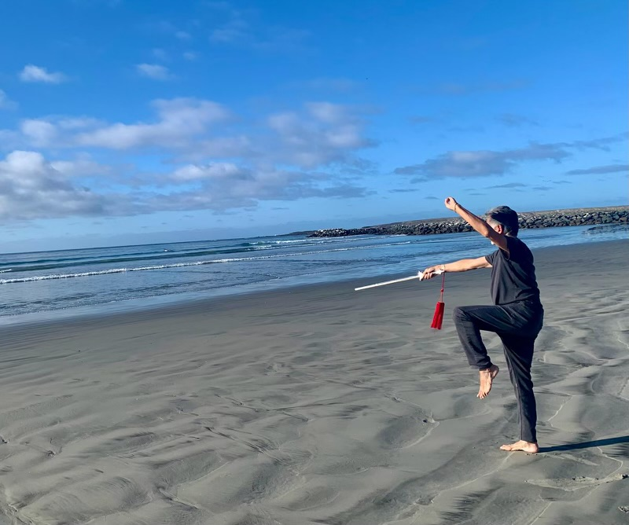

Life is a Moving Experience
From an early age, Wm Guillermo learned the importance of movement from his parents, his father was a household mover and his mother loved to dance. From his father, he learned the mechanics of alignment, balance and strength. While his mother emphasized the joy & creative potential of dance.
Since 1975, he has been teaching tai chi ch’uan, movement awareness and conscious dance throughout the United States, Mexico and Europe. His teachers include Dr. Marshall Ho’o (t'ai chi ch’uan), Anna Halprin (Choreography), Mariane Karou (Dance Alive) and Prapto Suryodharmo, Indonesian movement master.
Since 1984, he has conducted workshops in Europe where he incorporates elements of movement, ritual and healing. He is currently offering small group sessions with seniors, retreats which incorporate movement in nature and private in-depth sessions.
Benefits of Tai Chi Ch’uan
Tai chi is often described as "meditation in motion," but it might well be called "medication in motion." There is growing evidence that this mind-body practice, which originated in China as a martial art, has value in treating or preventing many health problems. And you can get started even if you aren't in top shape or the best of health.
In this low-impact, slow-motion exercise, you go without pausing through a series of motions named for animal actions — for example, "white crane spreads its wings" — or martial arts moves, such as "strike, parry and punch." As you move, you breathe deeply and naturally, focusing your attention on your bodily sensations. Tai chi differs from other types of exercise in several respects. The movements are usually circular and never forced, the muscles are relaxed rather than tensed, the joints are not fully extended or bent and connective tissues are not stretched. Tai chi can be easily adapted for anyone, from the most fit to people confined to wheelchairs or recovering from surgery.

"A growing body of carefully conducted research is building a compelling case for tai chi as an adjunct to standard medical treatment for the prevention and rehabilitation of many conditions commonly associated with age," says Peter M. Wayne, assistant professor of medicine at Harvard Medical School and director of the Tai Chi and Mind-Body Research Program at Harvard Medical School's Osher Research Center. An adjunct therapy is one that's used together with primary medical treatments, either to address a disease itself or its primary symptoms, or, more generally, to improve a patient's functioning and quality of life.